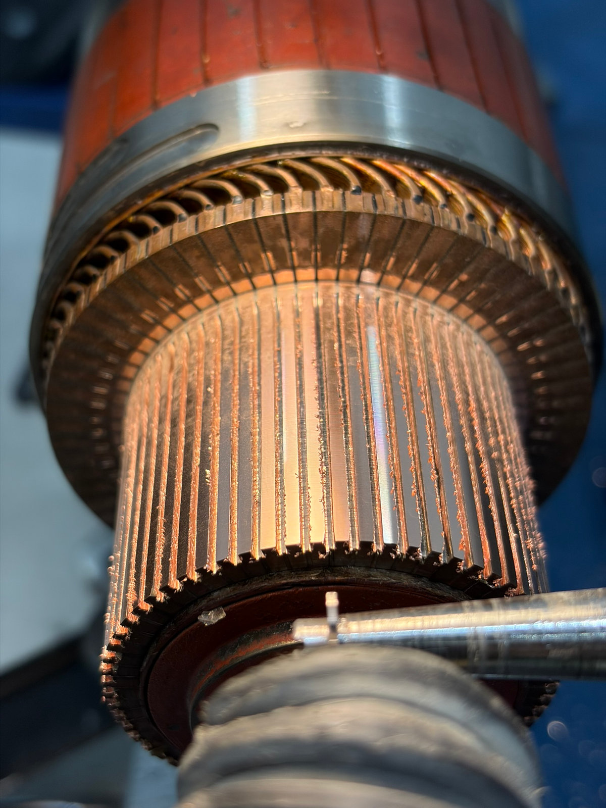
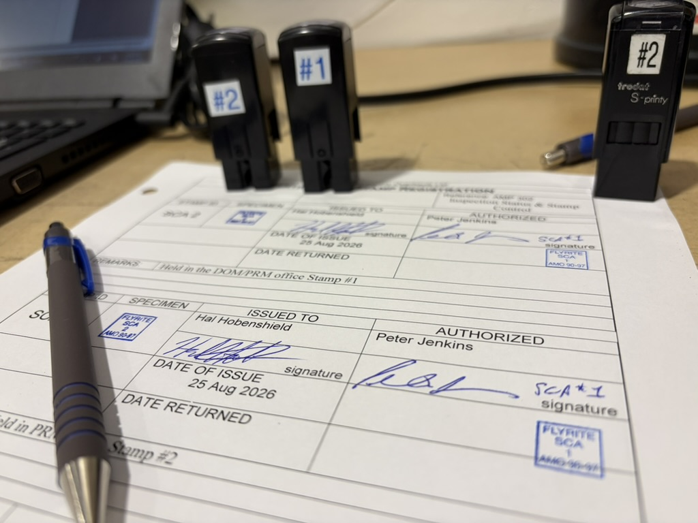

Overhaul
Complete disassembly, detailed inspection, replacement of worn components, reassembly and performance testing to OEM specifications.
Starter-generator specialists
Your starter-generator deserves a specialist. From meticulous overhauls to dependable support, we focus on one thing: doing it right.

Focused expertise
From the first inspection to the next flight, get the attention your starter-generator needs.
Complete disassembly, detailed inspection, replacement of worn components, reassembly and performance testing to OEM specifications.
Targeted repairs for specific defects and component failures, with assessment and performance verification.
Specialized equipment and proven procedures to evaluate performance, functionality and compliance with manufacturer specifications.
Systematic diagnosis of electrical and mechanical issues to identify root causes and recommend corrective action.
Serviceable, tested starter-generators to help keep your aircraft operational during an overhaul or repair.
Start with a conversation. We’ll help you find the right next step.
Talk to FlyRite
Better every day
We specialize exclusively in starter-generators. That focus shapes everything we do: following the manuals, choosing the best available parts, and continuously improving our knowledge, tooling and teamwork.
Keep your operation moving
Ask us about rental and exchange options while your unit is in the shop. Share your part number, aircraft and operating requirements with our team.
Check availabilityUnits listed on FlyRite’s current site. Contact the team to confirm availability, compatibility and terms.
The people behind the precision
Founded by Peter Jenkins in 1996, FlyRite grew from the demanding aviation environments of Canada’s North into a specialist overhaul business built on precision and personal service.
Today, President Hal Hobenshield carries that work forward in Vernon, British Columbia, bringing more than 25 years of aviation experience and a commitment to continuous improvement.
Before you get in touch
FlyRite specializes exclusively in aircraft starter-generators, including overhaul, repair, testing, evaluation and troubleshooting.
Email info@flyrite.ca or call +1 780-439-6020. Include your part number, serial number, aircraft and a description of the issue so the team can advise on next steps.
FlyRite lists rental and exchange options for Safran, Skurka/APC and Thales units. Contact the team to confirm current availability, compatibility and terms.
FlyRite Accessory Overhauls Ltd. is located at 306-5000 Silver Star Road, Vernon, British Columbia, Canada, V1B 0A9.
Let’s get to work
Tell us about your starter-generator, your operating environment and what you need. We’ll take it from there.
Email our team